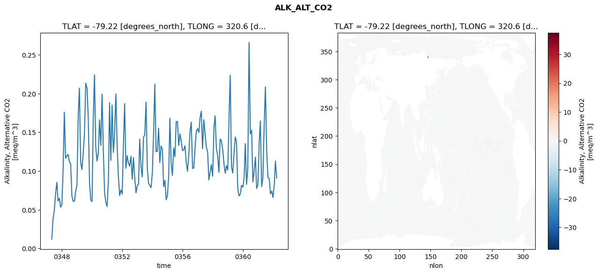
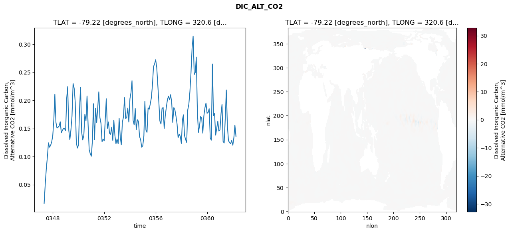
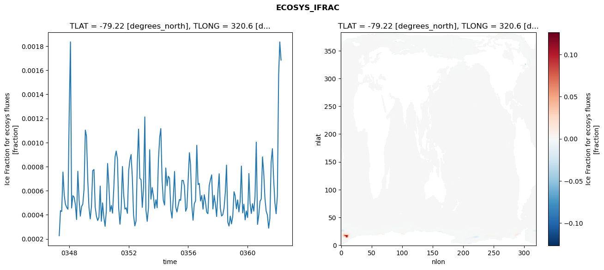
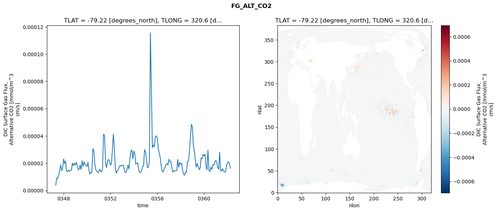

glb-dor_North_Atlantic_basin_025_1999-04-01_00101#
Simulation details#
Case: smyle.cdr-atlas-v0.glb-dor_North_Atlantic_basin_025_1999-04-01_00101.001
Basin: North_Atlantic_basin
Polygon: 25.0
Start date: 1999-04
Show code cell source Hide code cell source
import xarray as xr
import matplotlib.pyplot as plt
Show code cell source Hide code cell source
zarr_store = "/path/to/zarr/store"
# Parameters
zarr_store = "/global/cfs/projectdirs/m4746/Projects/Ocean-CDR-Atlas-v0/data/validation/smyle.cdr-atlas-v0.glb-dor_North_Atlantic_basin_025_1999-04-01_00101.001.validation.zarr"
Show code cell source Hide code cell source
%%time
ds_o = xr.open_zarr(zarr_store).compute()
ds_o
CPU times: user 621 ms, sys: 475 ms, total: 1.1 s
Wall time: 1.39 s
<xarray.Dataset> Size: 2MB
Dimensions: (nlat: 384, nlon: 320, time: 180)
Coordinates:
TLAT float64 8B -79.22
TLONG float64 8B 320.6
ULAT float64 8B -78.95
ULONG float64 8B 321.1
* time (time) object 1kB 0347-05-01 00:00:00 ... 0362-04-01 0...
z_t float32 4B 500.0
Dimensions without coordinates: nlat, nlon
Data variables:
ALK_ALT_CO2_diff (nlat, nlon) float32 492kB nan nan nan ... nan nan nan
ALK_ALT_CO2_rmse (time) float64 1kB 0.01189 0.03834 ... 0.1128 0.09088
DIC_ALT_CO2_diff (nlat, nlon) float32 492kB nan nan nan ... nan nan nan
DIC_ALT_CO2_rmse (time) float64 1kB 0.01649 0.05019 ... 0.1558 0.1358
ECOSYS_IFRAC_diff (nlat, nlon) float32 492kB nan nan nan ... nan nan nan
ECOSYS_IFRAC_rmse (time) float64 1kB 0.000226 0.0004338 ... 0.001684
FG_ALT_CO2_diff (nlat, nlon) float32 492kB nan nan nan ... nan nan nan
FG_ALT_CO2_rmse (time) float64 1kB 3.927e-06 9.158e-06 ... 1.622e-05xarray.Dataset
- nlat: 384
- nlon: 320
- time: 180
- TLAT()float64-79.22
- long_name :
- array of t-grid latitudes
- units :
- degrees_north
array(-79.22052261)
- TLONG()float64320.6
- long_name :
- array of t-grid longitudes
- units :
- degrees_east
array(320.56250892)
- ULAT()float64-78.95
- long_name :
- array of u-grid latitudes
- units :
- degrees_north
array(-78.95289509)
- ULONG()float64321.1
- long_name :
- array of u-grid longitudes
- units :
- degrees_east
array(321.12500894)
- time(time)object0347-05-01 00:00:00 ... 0362-04-...
- bounds :
- time_bound
- long_name :
- time
array([cftime.DatetimeNoLeap(347, 5, 1, 0, 0, 0, 0, has_year_zero=True), cftime.DatetimeNoLeap(347, 6, 1, 0, 0, 0, 0, has_year_zero=True), cftime.DatetimeNoLeap(347, 7, 1, 0, 0, 0, 0, has_year_zero=True), cftime.DatetimeNoLeap(347, 8, 1, 0, 0, 0, 0, has_year_zero=True), cftime.DatetimeNoLeap(347, 9, 1, 0, 0, 0, 0, has_year_zero=True), cftime.DatetimeNoLeap(347, 10, 1, 0, 0, 0, 0, has_year_zero=True), cftime.DatetimeNoLeap(347, 11, 1, 0, 0, 0, 0, has_year_zero=True), cftime.DatetimeNoLeap(347, 12, 1, 0, 0, 0, 0, has_year_zero=True), cftime.DatetimeNoLeap(348, 1, 1, 0, 0, 0, 0, has_year_zero=True), cftime.DatetimeNoLeap(348, 2, 1, 0, 0, 0, 0, has_year_zero=True), cftime.DatetimeNoLeap(348, 3, 1, 0, 0, 0, 0, has_year_zero=True), cftime.DatetimeNoLeap(348, 4, 1, 0, 0, 0, 0, has_year_zero=True), cftime.DatetimeNoLeap(348, 5, 1, 0, 0, 0, 0, has_year_zero=True), cftime.DatetimeNoLeap(348, 6, 1, 0, 0, 0, 0, has_year_zero=True), cftime.DatetimeNoLeap(348, 7, 1, 0, 0, 0, 0, has_year_zero=True), cftime.DatetimeNoLeap(348, 8, 1, 0, 0, 0, 0, has_year_zero=True), cftime.DatetimeNoLeap(348, 9, 1, 0, 0, 0, 0, has_year_zero=True), cftime.DatetimeNoLeap(348, 10, 1, 0, 0, 0, 0, has_year_zero=True), cftime.DatetimeNoLeap(348, 11, 1, 0, 0, 0, 0, has_year_zero=True), cftime.DatetimeNoLeap(348, 12, 1, 0, 0, 0, 0, has_year_zero=True), cftime.DatetimeNoLeap(349, 1, 1, 0, 0, 0, 0, has_year_zero=True), cftime.DatetimeNoLeap(349, 2, 1, 0, 0, 0, 0, has_year_zero=True), cftime.DatetimeNoLeap(349, 3, 1, 0, 0, 0, 0, has_year_zero=True), cftime.DatetimeNoLeap(349, 4, 1, 0, 0, 0, 0, has_year_zero=True), cftime.DatetimeNoLeap(349, 5, 1, 0, 0, 0, 0, has_year_zero=True), cftime.DatetimeNoLeap(349, 6, 1, 0, 0, 0, 0, has_year_zero=True), cftime.DatetimeNoLeap(349, 7, 1, 0, 0, 0, 0, has_year_zero=True), cftime.DatetimeNoLeap(349, 8, 1, 0, 0, 0, 0, has_year_zero=True), cftime.DatetimeNoLeap(349, 9, 1, 0, 0, 0, 0, has_year_zero=True), cftime.DatetimeNoLeap(349, 10, 1, 0, 0, 0, 0, has_year_zero=True), cftime.DatetimeNoLeap(349, 11, 1, 0, 0, 0, 0, has_year_zero=True), cftime.DatetimeNoLeap(349, 12, 1, 0, 0, 0, 0, has_year_zero=True), cftime.DatetimeNoLeap(350, 1, 1, 0, 0, 0, 0, has_year_zero=True), cftime.DatetimeNoLeap(350, 2, 1, 0, 0, 0, 0, has_year_zero=True), cftime.DatetimeNoLeap(350, 3, 1, 0, 0, 0, 0, has_year_zero=True), cftime.DatetimeNoLeap(350, 4, 1, 0, 0, 0, 0, has_year_zero=True), cftime.DatetimeNoLeap(350, 5, 1, 0, 0, 0, 0, has_year_zero=True), cftime.DatetimeNoLeap(350, 6, 1, 0, 0, 0, 0, has_year_zero=True), cftime.DatetimeNoLeap(350, 7, 1, 0, 0, 0, 0, has_year_zero=True), cftime.DatetimeNoLeap(350, 8, 1, 0, 0, 0, 0, has_year_zero=True), cftime.DatetimeNoLeap(350, 9, 1, 0, 0, 0, 0, has_year_zero=True), cftime.DatetimeNoLeap(350, 10, 1, 0, 0, 0, 0, has_year_zero=True), cftime.DatetimeNoLeap(350, 11, 1, 0, 0, 0, 0, has_year_zero=True), cftime.DatetimeNoLeap(350, 12, 1, 0, 0, 0, 0, has_year_zero=True), cftime.DatetimeNoLeap(351, 1, 1, 0, 0, 0, 0, has_year_zero=True), cftime.DatetimeNoLeap(351, 2, 1, 0, 0, 0, 0, has_year_zero=True), cftime.DatetimeNoLeap(351, 3, 1, 0, 0, 0, 0, has_year_zero=True), cftime.DatetimeNoLeap(351, 4, 1, 0, 0, 0, 0, has_year_zero=True), cftime.DatetimeNoLeap(351, 5, 1, 0, 0, 0, 0, has_year_zero=True), cftime.DatetimeNoLeap(351, 6, 1, 0, 0, 0, 0, has_year_zero=True), cftime.DatetimeNoLeap(351, 7, 1, 0, 0, 0, 0, has_year_zero=True), cftime.DatetimeNoLeap(351, 8, 1, 0, 0, 0, 0, has_year_zero=True), cftime.DatetimeNoLeap(351, 9, 1, 0, 0, 0, 0, has_year_zero=True), cftime.DatetimeNoLeap(351, 10, 1, 0, 0, 0, 0, has_year_zero=True), cftime.DatetimeNoLeap(351, 11, 1, 0, 0, 0, 0, has_year_zero=True), cftime.DatetimeNoLeap(351, 12, 1, 0, 0, 0, 0, has_year_zero=True), cftime.DatetimeNoLeap(352, 1, 1, 0, 0, 0, 0, has_year_zero=True), cftime.DatetimeNoLeap(352, 2, 1, 0, 0, 0, 0, has_year_zero=True), cftime.DatetimeNoLeap(352, 3, 1, 0, 0, 0, 0, has_year_zero=True), cftime.DatetimeNoLeap(352, 4, 1, 0, 0, 0, 0, has_year_zero=True), cftime.DatetimeNoLeap(352, 5, 1, 0, 0, 0, 0, has_year_zero=True), cftime.DatetimeNoLeap(352, 6, 1, 0, 0, 0, 0, has_year_zero=True), cftime.DatetimeNoLeap(352, 7, 1, 0, 0, 0, 0, has_year_zero=True), cftime.DatetimeNoLeap(352, 8, 1, 0, 0, 0, 0, has_year_zero=True), cftime.DatetimeNoLeap(352, 9, 1, 0, 0, 0, 0, has_year_zero=True), cftime.DatetimeNoLeap(352, 10, 1, 0, 0, 0, 0, has_year_zero=True), cftime.DatetimeNoLeap(352, 11, 1, 0, 0, 0, 0, has_year_zero=True), cftime.DatetimeNoLeap(352, 12, 1, 0, 0, 0, 0, has_year_zero=True), cftime.DatetimeNoLeap(353, 1, 1, 0, 0, 0, 0, has_year_zero=True), cftime.DatetimeNoLeap(353, 2, 1, 0, 0, 0, 0, has_year_zero=True), cftime.DatetimeNoLeap(353, 3, 1, 0, 0, 0, 0, has_year_zero=True), cftime.DatetimeNoLeap(353, 4, 1, 0, 0, 0, 0, has_year_zero=True), cftime.DatetimeNoLeap(353, 5, 1, 0, 0, 0, 0, has_year_zero=True), cftime.DatetimeNoLeap(353, 6, 1, 0, 0, 0, 0, has_year_zero=True), cftime.DatetimeNoLeap(353, 7, 1, 0, 0, 0, 0, has_year_zero=True), cftime.DatetimeNoLeap(353, 8, 1, 0, 0, 0, 0, has_year_zero=True), cftime.DatetimeNoLeap(353, 9, 1, 0, 0, 0, 0, has_year_zero=True), cftime.DatetimeNoLeap(353, 10, 1, 0, 0, 0, 0, has_year_zero=True), cftime.DatetimeNoLeap(353, 11, 1, 0, 0, 0, 0, has_year_zero=True), cftime.DatetimeNoLeap(353, 12, 1, 0, 0, 0, 0, has_year_zero=True), cftime.DatetimeNoLeap(354, 1, 1, 0, 0, 0, 0, has_year_zero=True), cftime.DatetimeNoLeap(354, 2, 1, 0, 0, 0, 0, has_year_zero=True), cftime.DatetimeNoLeap(354, 3, 1, 0, 0, 0, 0, has_year_zero=True), cftime.DatetimeNoLeap(354, 4, 1, 0, 0, 0, 0, has_year_zero=True), cftime.DatetimeNoLeap(354, 5, 1, 0, 0, 0, 0, has_year_zero=True), cftime.DatetimeNoLeap(354, 6, 1, 0, 0, 0, 0, has_year_zero=True), cftime.DatetimeNoLeap(354, 7, 1, 0, 0, 0, 0, has_year_zero=True), cftime.DatetimeNoLeap(354, 8, 1, 0, 0, 0, 0, has_year_zero=True), cftime.DatetimeNoLeap(354, 9, 1, 0, 0, 0, 0, has_year_zero=True), cftime.DatetimeNoLeap(354, 10, 1, 0, 0, 0, 0, has_year_zero=True), cftime.DatetimeNoLeap(354, 11, 1, 0, 0, 0, 0, has_year_zero=True), cftime.DatetimeNoLeap(354, 12, 1, 0, 0, 0, 0, has_year_zero=True), cftime.DatetimeNoLeap(355, 1, 1, 0, 0, 0, 0, has_year_zero=True), cftime.DatetimeNoLeap(355, 2, 1, 0, 0, 0, 0, has_year_zero=True), cftime.DatetimeNoLeap(355, 3, 1, 0, 0, 0, 0, has_year_zero=True), cftime.DatetimeNoLeap(355, 4, 1, 0, 0, 0, 0, has_year_zero=True), cftime.DatetimeNoLeap(355, 5, 1, 0, 0, 0, 0, has_year_zero=True), cftime.DatetimeNoLeap(355, 6, 1, 0, 0, 0, 0, has_year_zero=True), cftime.DatetimeNoLeap(355, 7, 1, 0, 0, 0, 0, has_year_zero=True), cftime.DatetimeNoLeap(355, 8, 1, 0, 0, 0, 0, has_year_zero=True), cftime.DatetimeNoLeap(355, 9, 1, 0, 0, 0, 0, has_year_zero=True), cftime.DatetimeNoLeap(355, 10, 1, 0, 0, 0, 0, has_year_zero=True), cftime.DatetimeNoLeap(355, 11, 1, 0, 0, 0, 0, has_year_zero=True), cftime.DatetimeNoLeap(355, 12, 1, 0, 0, 0, 0, has_year_zero=True), cftime.DatetimeNoLeap(356, 1, 1, 0, 0, 0, 0, has_year_zero=True), cftime.DatetimeNoLeap(356, 2, 1, 0, 0, 0, 0, has_year_zero=True), cftime.DatetimeNoLeap(356, 3, 1, 0, 0, 0, 0, has_year_zero=True), cftime.DatetimeNoLeap(356, 4, 1, 0, 0, 0, 0, has_year_zero=True), cftime.DatetimeNoLeap(356, 5, 1, 0, 0, 0, 0, has_year_zero=True), cftime.DatetimeNoLeap(356, 6, 1, 0, 0, 0, 0, has_year_zero=True), cftime.DatetimeNoLeap(356, 7, 1, 0, 0, 0, 0, has_year_zero=True), cftime.DatetimeNoLeap(356, 8, 1, 0, 0, 0, 0, has_year_zero=True), cftime.DatetimeNoLeap(356, 9, 1, 0, 0, 0, 0, has_year_zero=True), cftime.DatetimeNoLeap(356, 10, 1, 0, 0, 0, 0, has_year_zero=True), cftime.DatetimeNoLeap(356, 11, 1, 0, 0, 0, 0, has_year_zero=True), cftime.DatetimeNoLeap(356, 12, 1, 0, 0, 0, 0, has_year_zero=True), cftime.DatetimeNoLeap(357, 1, 1, 0, 0, 0, 0, has_year_zero=True), cftime.DatetimeNoLeap(357, 2, 1, 0, 0, 0, 0, has_year_zero=True), cftime.DatetimeNoLeap(357, 3, 1, 0, 0, 0, 0, has_year_zero=True), cftime.DatetimeNoLeap(357, 4, 1, 0, 0, 0, 0, has_year_zero=True), cftime.DatetimeNoLeap(357, 5, 1, 0, 0, 0, 0, has_year_zero=True), cftime.DatetimeNoLeap(357, 6, 1, 0, 0, 0, 0, has_year_zero=True), cftime.DatetimeNoLeap(357, 7, 1, 0, 0, 0, 0, has_year_zero=True), cftime.DatetimeNoLeap(357, 8, 1, 0, 0, 0, 0, has_year_zero=True), cftime.DatetimeNoLeap(357, 9, 1, 0, 0, 0, 0, has_year_zero=True), cftime.DatetimeNoLeap(357, 10, 1, 0, 0, 0, 0, has_year_zero=True), cftime.DatetimeNoLeap(357, 11, 1, 0, 0, 0, 0, has_year_zero=True), cftime.DatetimeNoLeap(357, 12, 1, 0, 0, 0, 0, has_year_zero=True), cftime.DatetimeNoLeap(358, 1, 1, 0, 0, 0, 0, has_year_zero=True), cftime.DatetimeNoLeap(358, 2, 1, 0, 0, 0, 0, has_year_zero=True), cftime.DatetimeNoLeap(358, 3, 1, 0, 0, 0, 0, has_year_zero=True), cftime.DatetimeNoLeap(358, 4, 1, 0, 0, 0, 0, has_year_zero=True), cftime.DatetimeNoLeap(358, 5, 1, 0, 0, 0, 0, has_year_zero=True), cftime.DatetimeNoLeap(358, 6, 1, 0, 0, 0, 0, has_year_zero=True), cftime.DatetimeNoLeap(358, 7, 1, 0, 0, 0, 0, has_year_zero=True), cftime.DatetimeNoLeap(358, 8, 1, 0, 0, 0, 0, has_year_zero=True), cftime.DatetimeNoLeap(358, 9, 1, 0, 0, 0, 0, has_year_zero=True), cftime.DatetimeNoLeap(358, 10, 1, 0, 0, 0, 0, has_year_zero=True), cftime.DatetimeNoLeap(358, 11, 1, 0, 0, 0, 0, has_year_zero=True), cftime.DatetimeNoLeap(358, 12, 1, 0, 0, 0, 0, has_year_zero=True), cftime.DatetimeNoLeap(359, 1, 1, 0, 0, 0, 0, has_year_zero=True), cftime.DatetimeNoLeap(359, 2, 1, 0, 0, 0, 0, has_year_zero=True), cftime.DatetimeNoLeap(359, 3, 1, 0, 0, 0, 0, has_year_zero=True), cftime.DatetimeNoLeap(359, 4, 1, 0, 0, 0, 0, has_year_zero=True), cftime.DatetimeNoLeap(359, 5, 1, 0, 0, 0, 0, has_year_zero=True), cftime.DatetimeNoLeap(359, 6, 1, 0, 0, 0, 0, has_year_zero=True), cftime.DatetimeNoLeap(359, 7, 1, 0, 0, 0, 0, has_year_zero=True), cftime.DatetimeNoLeap(359, 8, 1, 0, 0, 0, 0, has_year_zero=True), cftime.DatetimeNoLeap(359, 9, 1, 0, 0, 0, 0, has_year_zero=True), cftime.DatetimeNoLeap(359, 10, 1, 0, 0, 0, 0, has_year_zero=True), cftime.DatetimeNoLeap(359, 11, 1, 0, 0, 0, 0, has_year_zero=True), cftime.DatetimeNoLeap(359, 12, 1, 0, 0, 0, 0, has_year_zero=True), cftime.DatetimeNoLeap(360, 1, 1, 0, 0, 0, 0, has_year_zero=True), cftime.DatetimeNoLeap(360, 2, 1, 0, 0, 0, 0, has_year_zero=True), cftime.DatetimeNoLeap(360, 3, 1, 0, 0, 0, 0, has_year_zero=True), cftime.DatetimeNoLeap(360, 4, 1, 0, 0, 0, 0, has_year_zero=True), cftime.DatetimeNoLeap(360, 5, 1, 0, 0, 0, 0, has_year_zero=True), cftime.DatetimeNoLeap(360, 6, 1, 0, 0, 0, 0, has_year_zero=True), cftime.DatetimeNoLeap(360, 7, 1, 0, 0, 0, 0, has_year_zero=True), cftime.DatetimeNoLeap(360, 8, 1, 0, 0, 0, 0, has_year_zero=True), cftime.DatetimeNoLeap(360, 9, 1, 0, 0, 0, 0, has_year_zero=True), cftime.DatetimeNoLeap(360, 10, 1, 0, 0, 0, 0, has_year_zero=True), cftime.DatetimeNoLeap(360, 11, 1, 0, 0, 0, 0, has_year_zero=True), cftime.DatetimeNoLeap(360, 12, 1, 0, 0, 0, 0, has_year_zero=True), cftime.DatetimeNoLeap(361, 1, 1, 0, 0, 0, 0, has_year_zero=True), cftime.DatetimeNoLeap(361, 2, 1, 0, 0, 0, 0, has_year_zero=True), cftime.DatetimeNoLeap(361, 3, 1, 0, 0, 0, 0, has_year_zero=True), cftime.DatetimeNoLeap(361, 4, 1, 0, 0, 0, 0, has_year_zero=True), cftime.DatetimeNoLeap(361, 5, 1, 0, 0, 0, 0, has_year_zero=True), cftime.DatetimeNoLeap(361, 6, 1, 0, 0, 0, 0, has_year_zero=True), cftime.DatetimeNoLeap(361, 7, 1, 0, 0, 0, 0, has_year_zero=True), cftime.DatetimeNoLeap(361, 8, 1, 0, 0, 0, 0, has_year_zero=True), cftime.DatetimeNoLeap(361, 9, 1, 0, 0, 0, 0, has_year_zero=True), cftime.DatetimeNoLeap(361, 10, 1, 0, 0, 0, 0, has_year_zero=True), cftime.DatetimeNoLeap(361, 11, 1, 0, 0, 0, 0, has_year_zero=True), cftime.DatetimeNoLeap(361, 12, 1, 0, 0, 0, 0, has_year_zero=True), cftime.DatetimeNoLeap(362, 1, 1, 0, 0, 0, 0, has_year_zero=True), cftime.DatetimeNoLeap(362, 2, 1, 0, 0, 0, 0, has_year_zero=True), cftime.DatetimeNoLeap(362, 3, 1, 0, 0, 0, 0, has_year_zero=True), cftime.DatetimeNoLeap(362, 4, 1, 0, 0, 0, 0, has_year_zero=True)], dtype=object) - z_t()float32500.0
- long_name :
- depth from surface to midpoint of layer
- positive :
- down
- units :
- centimeters
- valid_max :
- 537500.0
- valid_min :
- 500.0
array(500., dtype=float32)
- ALK_ALT_CO2_diff(nlat, nlon)float32nan nan nan nan ... nan nan nan nan
- cell_methods :
- time: mean
- grid_loc :
- 3111
- long_name :
- Alkalinity, Alternative CO2
- units :
- meq/m^3
array([[ nan, nan, nan, ..., nan, nan, nan], [ nan, nan, nan, ..., nan, nan, nan], [-0.00878906, 0.00292969, 0.03076172, ..., nan, nan, nan], ..., [ nan, nan, nan, ..., nan, nan, nan], [ nan, nan, nan, ..., nan, nan, nan], [ nan, nan, nan, ..., nan, nan, nan]], dtype=float32) - ALK_ALT_CO2_rmse(time)float640.01189 0.03834 ... 0.1128 0.09088
- cell_methods :
- time: mean
- grid_loc :
- 3111
- long_name :
- Alkalinity, Alternative CO2
- units :
- meq/m^3
array([0.01188747, 0.03834414, 0.04857656, 0.07030193, 0.08543973, 0.06134659, 0.06480297, 0.05324417, 0.05673139, 0.10438161, 0.17602902, 0.1164929 , 0.11930856, 0.12147539, 0.11177851, 0.10949933, 0.06727806, 0.06094481, 0.06082268, 0.07384785, 0.08180167, 0.17174684, 0.20698529, 0.11093197, 0.10179937, 0.12223596, 0.1479337 , 0.21355122, 0.20720529, 0.16948559, 0.0854078 , 0.06257798, 0.06045226, 0.16926453, 0.22429358, 0.13146965, 0.11286643, 0.1224062 , 0.16596974, 0.13287909, 0.19933795, 0.12776394, 0.07189114, 0.05956786, 0.05412741, 0.08844668, 0.18797289, 0.11363476, 0.1851762 , 0.12396479, 0.14738102, 0.19955806, 0.13264847, 0.0926363 , 0.06821696, 0.07553748, 0.07031804, 0.13629691, 0.18703594, 0.10340981, 0.11976606, 0.11046344, 0.10627346, 0.1190739 , 0.08939434, 0.11737164, 0.09035877, 0.07177737, 0.08126808, 0.08302545, 0.14127473, 0.10572186, 0.09236651, 0.14347012, 0.14672625, 0.18894215, 0.10321203, 0.08432457, 0.08089341, 0.0785166 , 0.09797427, 0.15094269, 0.21226008, 0.12495685, 0.12553316, 0.15520637, 0.11075751, 0.13235538, 0.12800192, 0.07989717, 0.08791866, 0.06303812, 0.06831401, 0.09384043, 0.1681332 , 0.11022666, 0.09425358, 0.1297249 , 0.1185029 , 0.16367938, 0.16399802, 0.13311186, 0.14789149, 0.13847759, 0.12632383, 0.12732799, 0.13263636, 0.11087805, 0.09955722, 0.12019647, 0.1504344 , 0.16316582, 0.10333144, 0.1037798 , 0.13031923, 0.15111812, 0.15491846, 0.14976521, 0.16841093, 0.17730293, 0.12855922, 0.16622249, 0.14831506, 0.13059763, 0.12443066, 0.08847038, 0.09829863, 0.10812296, 0.09325811, 0.15597903, 0.17126974, 0.12919819, 0.12013592, 0.09819038, 0.14140395, 0.13894138, 0.12744994, 0.10940593, 0.09723137, 0.10704499, 0.10115741, 0.16820891, 0.22370949, 0.10569358, 0.09736682, 0.12205953, 0.14393899, 0.13771583, 0.07666713, 0.06785351, 0.07004516, 0.08129265, 0.07910141, 0.09127283, 0.13535724, 0.08277007, 0.10331033, 0.26597302, 0.14782035, 0.1527005 , 0.08587165, 0.09972102, 0.11798108, 0.07755668, 0.08223788, 0.1368254 , 0.16459932, 0.07979762, 0.09055444, 0.1578023 , 0.20858576, 0.12713185, 0.09163078, 0.09048949, 0.07050545, 0.07409043, 0.06577529, 0.08237524, 0.11279517, 0.09087757]) - DIC_ALT_CO2_diff(nlat, nlon)float32nan nan nan nan ... nan nan nan nan
- cell_methods :
- time: mean
- grid_loc :
- 3111
- long_name :
- Dissolved Inorganic Carbon, Alternative CO2
- units :
- mmol/m^3
array([[ nan, nan, nan, ..., nan, nan, nan], [ nan, nan, nan, ..., nan, nan, nan], [-0.01489258, 0.01611328, 0.06054688, ..., nan, nan, nan], ..., [ nan, nan, nan, ..., nan, nan, nan], [ nan, nan, nan, ..., nan, nan, nan], [ nan, nan, nan, ..., nan, nan, nan]], dtype=float32) - DIC_ALT_CO2_rmse(time)float640.01649 0.05019 ... 0.1558 0.1358
- cell_methods :
- time: mean
- grid_loc :
- 3111
- long_name :
- Dissolved Inorganic Carbon, Alternative CO2
- units :
- mmol/m^3
array([0.01649201, 0.05018511, 0.07771968, 0.09899366, 0.12449801, 0.11661069, 0.1201155 , 0.12581135, 0.13737156, 0.1663548 , 0.21094722, 0.16096368, 0.15075822, 0.1522848 , 0.15433736, 0.16192376, 0.14247288, 0.14658211, 0.14985074, 0.14968705, 0.14632674, 0.20435899, 0.22453736, 0.14669458, 0.13015303, 0.14794485, 0.17206959, 0.23000312, 0.2215494 , 0.19654827, 0.12476398, 0.11511908, 0.12063272, 0.18588665, 0.22328573, 0.14358785, 0.12960324, 0.13719816, 0.17521723, 0.16359444, 0.20779074, 0.1567458 , 0.11212621, 0.10502522, 0.10064142, 0.1289034 , 0.19417269, 0.13033904, 0.18598306, 0.1606303 , 0.18662194, 0.21534168, 0.16936328, 0.15945955, 0.12645576, 0.13104401, 0.12814858, 0.16738497, 0.20290608, 0.15018588, 0.16157637, 0.14160046, 0.13955425, 0.15230993, 0.12876688, 0.16464112, 0.13728732, 0.12278465, 0.13131105, 0.12277927, 0.16796727, 0.13532458, 0.12106027, 0.16155147, 0.17017783, 0.20506046, 0.16804887, 0.16892791, 0.1862129 , 0.1614694 , 0.20280618, 0.21410894, 0.23504019, 0.16459245, 0.15657437, 0.1855224 , 0.14799348, 0.16559254, 0.16262291, 0.13551688, 0.13008659, 0.11663398, 0.11927085, 0.13683333, 0.19824817, 0.1471946 , 0.14316785, 0.18679841, 0.18426937, 0.19361256, 0.20460452, 0.22634712, 0.26027203, 0.26482295, 0.27243494, 0.25873518, 0.23032663, 0.19814989, 0.16337177, 0.1579594 , 0.18539115, 0.18751186, 0.15012196, 0.17292164, 0.18808117, 0.20120993, 0.20745577, 0.20119933, 0.2101052 , 0.19724212, 0.1610214 , 0.18730459, 0.18338297, 0.17182967, 0.15801937, 0.13371165, 0.13988295, 0.13593331, 0.12345748, 0.16575188, 0.17429889, 0.13715952, 0.130556 , 0.12501786, 0.18302706, 0.19320913, 0.21624302, 0.2491144 , 0.29263067, 0.31455287, 0.24612125, 0.25003236, 0.27701735, 0.178717 , 0.14305582, 0.15493126, 0.17122709, 0.16879642, 0.14171098, 0.17207296, 0.18693023, 0.19530782, 0.17708144, 0.17875895, 0.18523311, 0.13330089, 0.12921762, 0.26492294, 0.17280574, 0.17670265, 0.13814146, 0.15006434, 0.16305996, 0.1455396 , 0.1474058 , 0.17639736, 0.1927825 , 0.12686788, 0.12412453, 0.16800205, 0.2186119 , 0.15349123, 0.12816662, 0.12477331, 0.12296196, 0.12873214, 0.12016031, 0.13411943, 0.15579438, 0.13577519]) - ECOSYS_IFRAC_diff(nlat, nlon)float32nan nan nan nan ... nan nan nan nan
- cell_methods :
- time: mean
- grid_loc :
- 2110
- long_name :
- Ice Fraction for ecosys fluxes
- units :
- fraction
array([[ nan, nan, nan, ..., nan, nan, nan], [ nan, nan, nan, ..., nan, nan, nan], [-0.00016046, -0.00276268, -0.00182247, ..., nan, nan, nan], ..., [ nan, nan, nan, ..., nan, nan, nan], [ nan, nan, nan, ..., nan, nan, nan], [ nan, nan, nan, ..., nan, nan, nan]], dtype=float32) - ECOSYS_IFRAC_rmse(time)float640.000226 0.0004338 ... 0.001684
- cell_methods :
- time: mean
- grid_loc :
- 2110
- long_name :
- Ice Fraction for ecosys fluxes
- units :
- fraction
array([0.00022602, 0.00043382, 0.00042826, 0.00075492, 0.00056286, 0.00048713, 0.00046125, 0.00044592, 0.00124378, 0.00183563, 0.00045546, 0.00055828, 0.00054665, 0.00048464, 0.00036073, 0.00076141, 0.00052121, 0.00038901, 0.00046888, 0.00048838, 0.00061526, 0.00110317, 0.00105249, 0.00069421, 0.00046314, 0.00036582, 0.00046704, 0.00076644, 0.00077579, 0.00046451, 0.00038705, 0.0003524 , 0.00037906, 0.00063815, 0.00034639, 0.00049889, 0.00037914, 0.00030459, 0.0004307 , 0.00082552, 0.00065235, 0.00042693, 0.00047671, 0.00041359, 0.00062156, 0.00088134, 0.00092921, 0.0008617 , 0.0004551 , 0.00032174, 0.00044757, 0.00080148, 0.00056448, 0.00044739, 0.00045721, 0.00041209, 0.00076658, 0.00085596, 0.00089971, 0.00070869, 0.00039612, 0.00030774, 0.00034742, 0.00083246, 0.00111109, 0.00070305, 0.00069142, 0.00046122, 0.00062471, 0.0012125 , 0.00043875, 0.00034543, 0.00045484, 0.00094042, 0.00052927, 0.00062589, 0.0005537 , 0.00045303, 0.00052443, 0.00045882, 0.00085298, 0.00104285, 0.00111564, 0.00068884, 0.00051957, 0.00048127, 0.00078827, 0.00064065, 0.00071976, 0.00070352, 0.0004407 , 0.00037238, 0.00054098, 0.00075953, 0.00046527, 0.00042275, 0.00047819, 0.00052679, 0.00052016, 0.00068494, 0.0006853 , 0.00064081, 0.00042952, 0.00045789, 0.00068527, 0.00091507, 0.00081239, 0.00047399, 0.00035485, 0.00049202, 0.00051528, 0.00097685, 0.00065057, 0.00066035, 0.00051468, 0.00055968, 0.00044696, 0.00056612, 0.00051021, 0.00042084, 0.00040906, 0.00064091, 0.00068952, 0.00073097, 0.00044813, 0.00056064, 0.00048655, 0.00038576, 0.00059022, 0.00074057, 0.00045836, 0.00038998, 0.00040016, 0.00045549, 0.00058132, 0.00081245, 0.00033898, 0.00030642, 0.00038845, 0.00032462, 0.00038875, 0.00059139, 0.00055686, 0.00044969, 0.00052327, 0.00042361, 0.0005099 , 0.00080424, 0.00041533, 0.00048723, 0.00035802, 0.00043124, 0.000377 , 0.00074238, 0.00049724, 0.00041071, 0.00049176, 0.00043004, 0.0005492 , 0.0010032 , 0.00032057, 0.00039629, 0.00051183, 0.0005305 , 0.00088068, 0.00074424, 0.0005402 , 0.00042979, 0.00039839, 0.00028902, 0.00037057, 0.00083867, 0.00094855, 0.00069932, 0.00049918, 0.00040864, 0.00055903, 0.00155971, 0.00183522, 0.00168438]) - FG_ALT_CO2_diff(nlat, nlon)float32nan nan nan nan ... nan nan nan nan
- cell_methods :
- time: mean
- grid_loc :
- 2110
- long_name :
- DIC Surface Gas Flux, Alternative CO2
- units :
- mmol/m^3 cm/s
array([[ nan, nan, nan, ..., nan, nan, nan], [ nan, nan, nan, ..., nan, nan, nan], [4.3882465e-06, 1.1352036e-05, 8.5957290e-06, ..., nan, nan, nan], ..., [ nan, nan, nan, ..., nan, nan, nan], [ nan, nan, nan, ..., nan, nan, nan], [ nan, nan, nan, ..., nan, nan, nan]], dtype=float32) - FG_ALT_CO2_rmse(time)float643.927e-06 9.158e-06 ... 1.622e-05
- cell_methods :
- time: mean
- grid_loc :
- 2110
- long_name :
- DIC Surface Gas Flux, Alternative CO2
- units :
- mmol/m^3 cm/s
array([3.92666944e-06, 9.15834976e-06, 8.78558288e-06, 1.10985508e-05, 1.45298308e-05, 1.88472651e-05, 1.44543357e-05, 1.60769742e-05, 2.30911769e-05, 1.97638112e-05, 2.16556372e-05, 1.39979811e-05, 1.38484186e-05, 1.48867992e-05, 1.40656823e-05, 1.46206893e-05, 1.47997308e-05, 2.00872083e-05, 1.80664685e-05, 1.99334867e-05, 1.86125146e-05, 2.06256667e-05, 1.80883210e-05, 1.50897954e-05, 1.56173164e-05, 1.85733575e-05, 1.52104216e-05, 2.17560223e-05, 1.76930434e-05, 2.10407949e-05, 1.88677547e-05, 1.86726685e-05, 1.76087389e-05, 2.06533569e-05, 1.50492480e-05, 1.19096387e-05, 1.32621059e-05, 1.31453493e-05, 3.05213261e-05, 2.94471691e-05, 1.98610759e-05, 1.52844860e-05, 1.43258598e-05, 1.30358853e-05, 1.35438210e-05, 1.55828320e-05, 1.42630220e-05, 1.35469427e-05, 1.65631846e-05, 4.13514809e-05, 4.01089017e-05, 2.05340531e-05, 1.65997203e-05, 2.13488688e-05, 2.26658406e-05, 2.19320882e-05, 1.85386787e-05, 1.95568080e-05, 2.90429729e-05, 4.12961758e-05, 3.21527944e-05, 1.66725838e-05, 1.25828867e-05, 1.42480967e-05, 1.53095636e-05, 1.73441121e-05, 1.84561044e-05, 1.77170988e-05, 1.83698588e-05, 1.85382866e-05, 1.64535388e-05, 1.32806699e-05, 1.31041878e-05, 1.51099978e-05, 1.85509698e-05, 1.57205707e-05, 2.36674022e-05, 2.85433300e-05, 2.97106544e-05, 2.31427783e-05, ... 3.33898666e-05, 3.20386196e-05, 3.92903050e-05, 4.00482231e-05, 3.84763639e-05, 3.07468783e-05, 2.76017935e-05, 2.44662838e-05, 1.87751625e-05, 1.41441282e-05, 1.35544718e-05, 1.57113021e-05, 1.69006130e-05, 1.89369004e-05, 1.97211327e-05, 1.85561551e-05, 2.28939106e-05, 2.12662245e-05, 2.12037331e-05, 1.68220265e-05, 1.34177258e-05, 1.44566654e-05, 1.41474509e-05, 1.48028224e-05, 1.43694792e-05, 2.27950965e-05, 1.69897022e-05, 2.03978045e-05, 1.92373135e-05, 1.98793572e-05, 1.48894345e-05, 1.18327273e-05, 1.11594334e-05, 1.33408396e-05, 1.35931352e-05, 2.12679488e-05, 2.14834192e-05, 2.89560470e-05, 3.89049359e-05, 4.86024935e-05, 4.63384987e-05, 3.25826313e-05, 2.93943703e-05, 2.22257075e-05, 1.71002269e-05, 1.97084933e-05, 1.77257819e-05, 1.52196578e-05, 1.64545189e-05, 2.38695957e-05, 2.32661296e-05, 2.64669590e-05, 2.54234362e-05, 2.65182840e-05, 1.80346140e-05, 1.50825954e-05, 2.95683554e-05, 1.48264918e-05, 1.37826810e-05, 1.70562938e-05, 1.54333613e-05, 1.89222881e-05, 1.84788422e-05, 2.08601818e-05, 2.19907035e-05, 2.08294539e-05, 1.69435244e-05, 1.55484655e-05, 2.79848205e-05, 1.43328326e-05, 1.43214323e-05, 1.59274164e-05, 1.43014757e-05, 1.35853073e-05, 1.34926068e-05, 1.83134767e-05, 2.03257803e-05, 2.10339180e-05, 1.99126811e-05, 1.62186213e-05])
- timePandasIndex
PandasIndex(CFTimeIndex([0347-05-01 00:00:00, 0347-06-01 00:00:00, 0347-07-01 00:00:00, 0347-08-01 00:00:00, 0347-09-01 00:00:00, 0347-10-01 00:00:00, 0347-11-01 00:00:00, 0347-12-01 00:00:00, 0348-01-01 00:00:00, 0348-02-01 00:00:00, ... 0361-07-01 00:00:00, 0361-08-01 00:00:00, 0361-09-01 00:00:00, 0361-10-01 00:00:00, 0361-11-01 00:00:00, 0361-12-01 00:00:00, 0362-01-01 00:00:00, 0362-02-01 00:00:00, 0362-03-01 00:00:00, 0362-04-01 00:00:00], dtype='object', length=180, calendar='noleap', freq='MS'))
Show code cell source Hide code cell source
variables = [v[:-5] for v in ds_o.variables if "_rmse" in v]
Show code cell source Hide code cell source
plt.rcParams.update({'figure.max_open_warning': 0})
for v in variables:
fig, axs = plt.subplots(1, 2, figsize=(15, 6))
ds_o[f"{v}_rmse"].plot(ax=axs[0])
ds_o[f"{v}_diff"].plot(ax=axs[1])
plt.suptitle(v, fontweight="bold")



